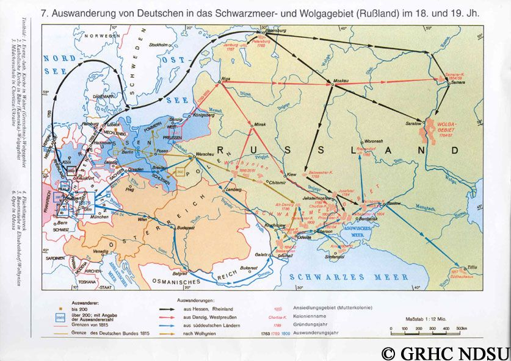
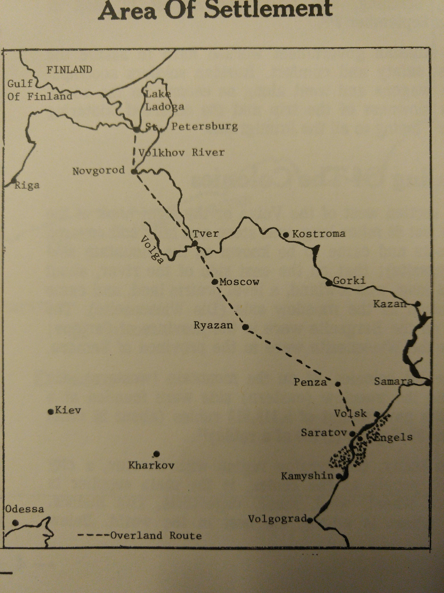
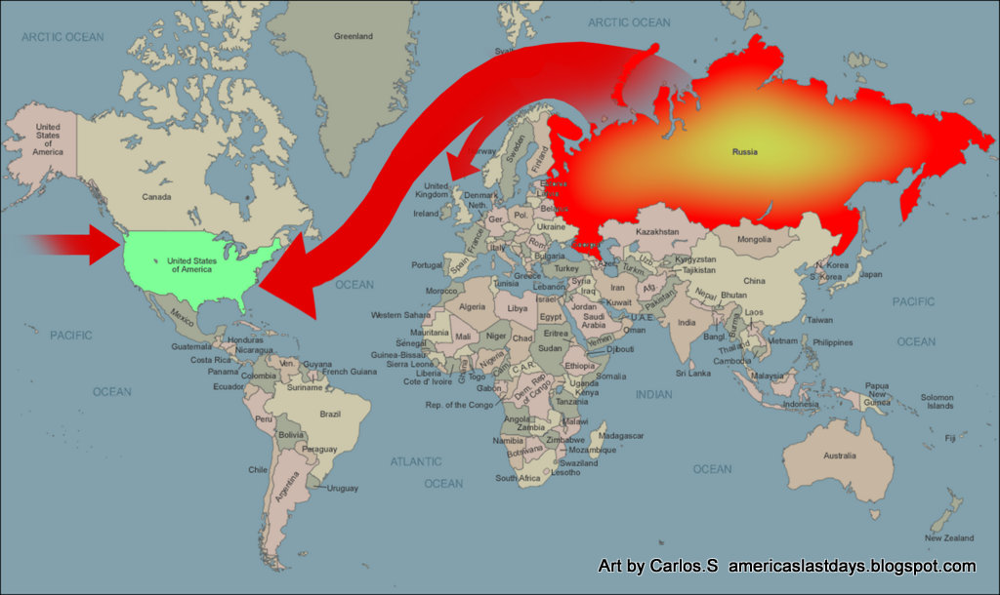

This map shows the different migration routes that immigrants took from Germany to Russia.

This map shows the different the routes and areas of settlement within Russia after the Germans moved from Germany to Russia.

This route was traveled by ship to transport the Volga Germans to the United States where they created towns in rural areas to live out their lives. My ancestors grew their families around Hays, KS.